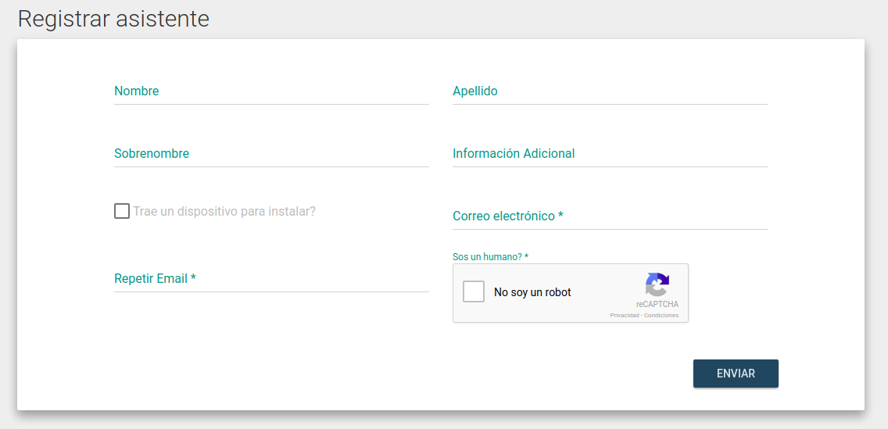

Pre-registro de asistentes
Previo al día del evento, los asistentes se pueden registrar al mismo. Esto es útil para la organización, para tener una idea aproximada de la cantidad de gente que concurrirá ese día.
Para esto, el asistente puede ingresar a la página principal del evento y elegir la opción "Registrarme" en la barra superior.
Luego deberá completar un formulario donde el único dato requerido es un email válido y un captcha.

Una vez completado el formulario, se le enviará un mail con un link de verificación y una vez verificado el mail, se le enviará la entrada en pdf al mismo. Esta entrada tiene un código QR y los datos del evento. La misma sirve para registrar su asistencia el día del evento.
No es necesario que concurra con esta entrada. El día del evento se lo puede buscar por cualquiera de los datos que ingresó en el formulario.
URL
A fines prácticos, para utilizar en volantes y publicaciones, se puede compartir directamente la URL que lleva a una persona al formulario de registración de esa sede. La URL tiene la siguiente forma:
https://eventol.flisol.org.ar/event/<SEDE_URL>/registration
Donde <SEDE_URL> es la porción de URL que se eligió para utilizar al momento de crear el evento.